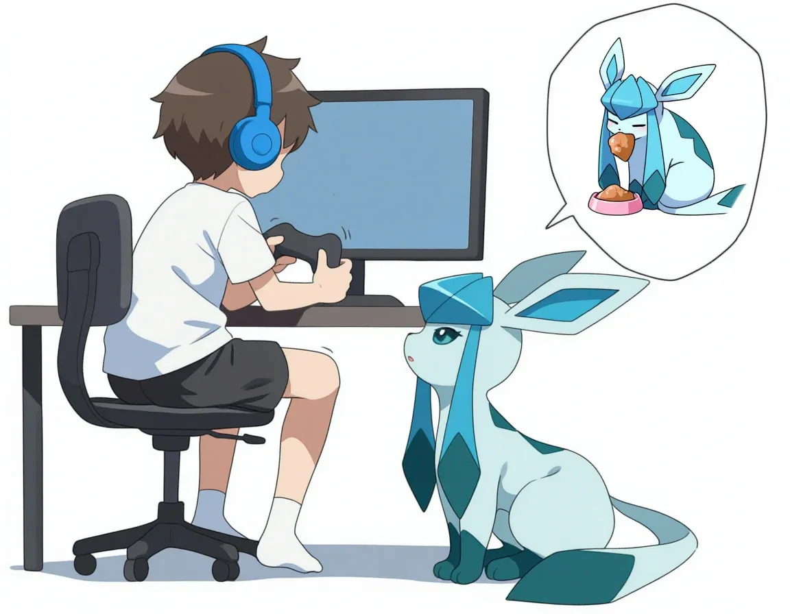

"주인님, 밥 좀 달라브이."
댓글

글레이시아니까 브이브이가 아니라 글레글레라고 해야지
글레가튼년
단나트레이너사마가 생겼습니다
스엑스하러갔구나
제가 포켓몬으로 보여요?
ㅋㅋㅋㅋㅋㅋㅋㅋㅋㅋㅋㅋㅋㅋㅋㅋㅋㅋㅋ
바리에이션이 지독하구나...
여름에 한마리 키우면 시원할듯
홍조는 도대체 왜
아 트름했네
어떻게 이름이 글래 ㅋ
주인이 게임중독이네

나 원래 퍼리가 아닌데 흠


막컷 얼굴 빨개진거 보면 주인이 커졌나보네
바지 살짝 내려간거 보면 빼박임
왜 빨개지냐고 ㅋㅋㅋㅋ
머 이런 좆같은 걸 쳐올리냐 자꾸
바지 벗고 책상 밑으로 들어가게 시키면 되잖아
알아서 바지내리고 꺼내먹어
우유 내놔